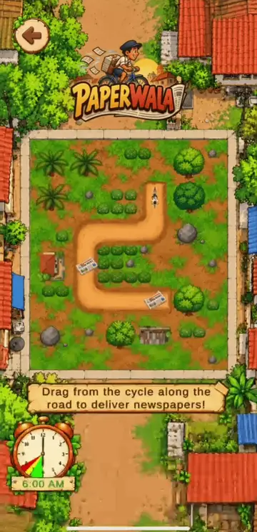

Drawing the route
The route must stay on the road and pass through every newspaper. Missing one shows “Connect all the newspapers first!” and lets the player redraw, and drawing off the road shows a warning. Failure is never silent.
The in-game clock runs from 6:00 to 8:00 AM while the cycle rides. Its digits turn green, then yellow, then red, and it throbs in the last half hour, so the player feels the urgency without reading numbers. Each newspaper is thrown towards the nearest house as the cycle passes, a small reward at every step.
